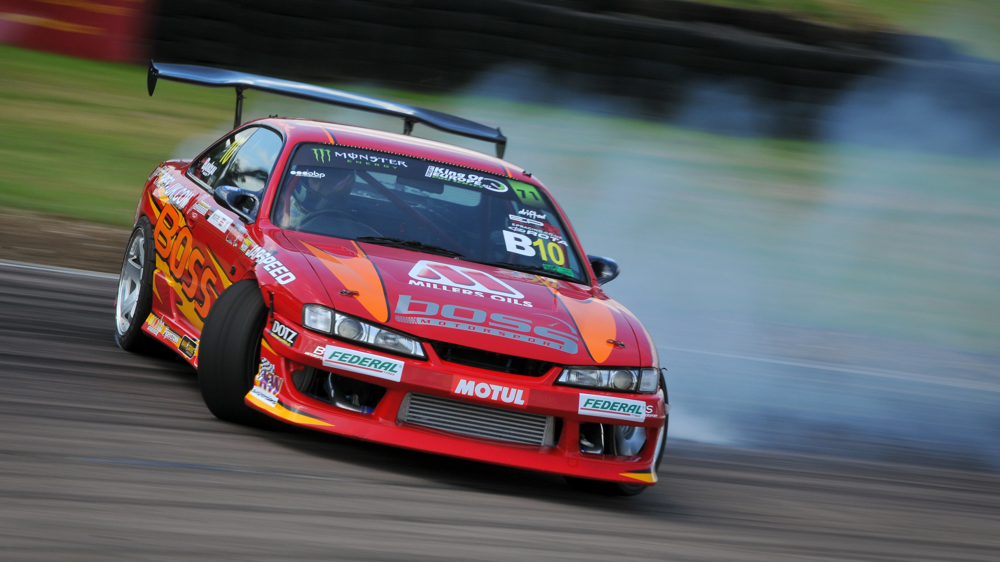
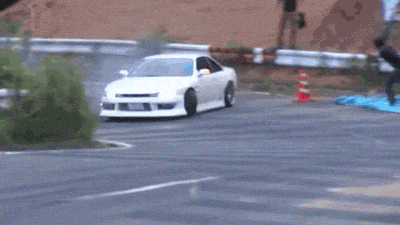
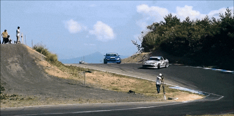
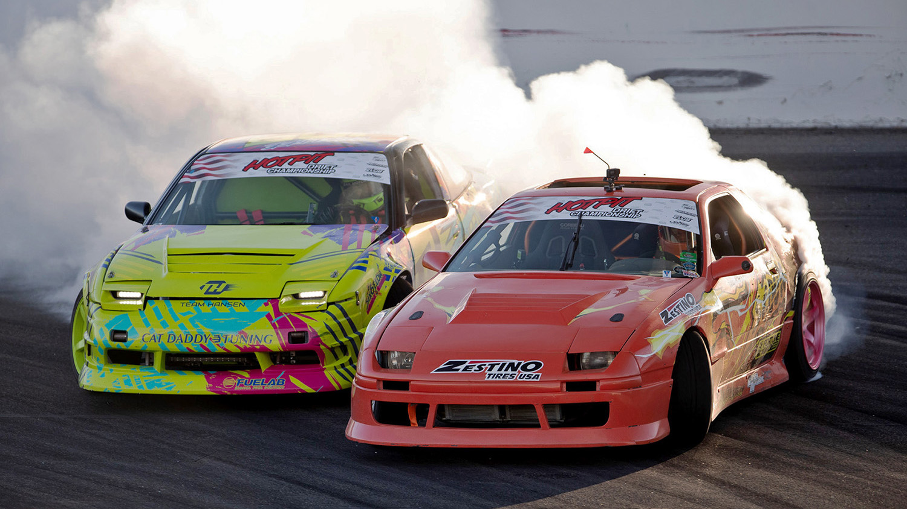

Дрифт (транслітерація англ. Drift = «дрифт») — техніка проходження поворотів і вид автоспорту, що характеризуються проходженням поворотів з навмисним зривом провідної осі і прохід у керованому заносі на максимально можливій для утримання на трасі кута швидкості, що вимагають від автомобіля наявності задньої тягово-ковзної осі (можна також виконувати на повному приводі). Здебільшого використання такого заносу є не найшвидшим способом проходження поворотів, але досить ефектним і видовищним, завдяки чому змагання з цього виду автоспорту приваблюють багато глядачів. Змагання повинні проводитися на асфальті або на льоду. В українській мові також використовується термін «керований занос» і зустрічається слово «дрифтинг».
Цей спорт зародився в Японії, а згодом отримав широке поширення і в інших країнах. Існує два типи заїздів: одиночні та парні. Переможець зазвичай визначається в декількох заїздах. У одиночних заїздах судді нараховують гонщику певну кількість очок, залежно від швидкості, траєкторії, кута заносу та видовищності заїзду в цілому.
У парних заїздах перший учасник повинен проїхати оцінювану ділянку відповідно до завдання (найчастіше по максимально правильній траєкторії), завданням другого учасника є якомога сильніше наблизитися до свого суперника під час руху в заносі, робити синхронні перекладки. Для визначення переможця проводять два заїзди, у другому заїзді правила ті ж, але суперники міняються місцями. Переможцем є той пілот, який проїхав ближче та найкраще у заїзді, де він наздоганяв суперника. Також, якщо обидва заїзди були бездоганними, або кількість помилок обох пілотів сумарно однакова, судді можуть призначити додатковий заїзд, в якому і повинен визначитися переможець.


Formula DRIFT (також відома як Formula D або FD) — це американська професійна серія з дрифту, яку у 2003 році заснували Джим Ліау та Раян Сейдж як дочірню компанію Slipstream Global Marketing, яка мала те саме партнерство, що й у Сполучених Штатах, що й запровадила Гран-прі D1. Formula D не передбачає акценту на швидкості, але нова організація буде виключно володіти, керувати та запускати першу офіційну серію з дрифту в Північній Америці. Formula DRIFT не пов'язана з серією чемпіонатів FIA з формул-перегонів.
Formula DRIFT has 84 licensed drivers competing in PRO and PROSPEC (formerly PRO 2[2]) as of June 2024. The series consists of an eight-round championship played out at race tracks across North America. Formula DRIFT is judged on line, angle, and style, where all contestants start with 100 points, and take away said points for mistakes. The hosts will honor an eight-round competition across the U.S.A., and also offer a car show called Offset Kings. Formula DRIFT expanded its presence into being a franchise. It is challenged into head-to-head battles, and total results, rather than who finishes the course in the fastest time.

